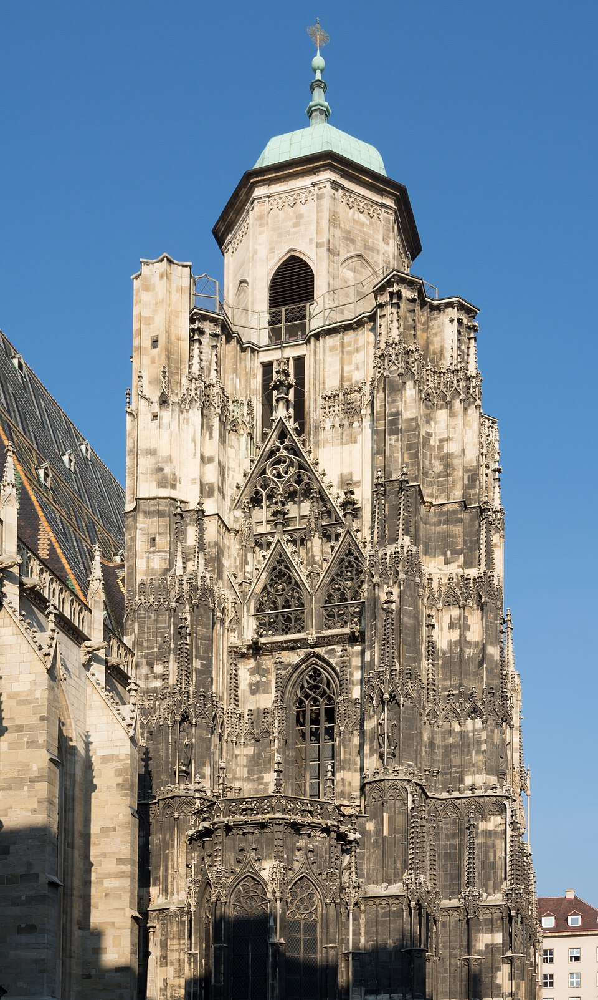

Andrea Stelzmüller - 6R
Geografische Fakten
Traumstadt: Madird
Einwohnerzahl: 3,4 Mio
Top 3 Sehenswüigkeiten
- Palacio Real
- Plaza Mayor
- Mercado de San Miguel
Kulinarische Spezialitäten
Visueller Eindruck

Uoaei1,
Stephansdom Nordturm 01.JPG
Creative Commons Attribution-Share Alike 3.0